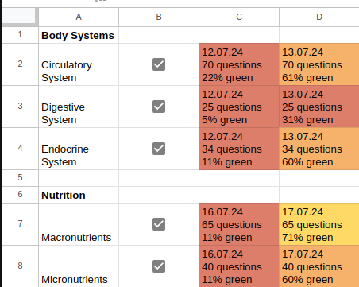

About 'uncle bobs book learnin shed'
'uncle bobs book learnin shed' is an add-on for Google Sheets. This tool is intended to help students and professionals learn any reading-heavy topic by using Google Sheets.
Purpose
The intended purpose of this app is to help automate this scheduling technique by creatively combining it with this study technique, as well as by adding checkboxes to make the process use fewer clicks. Rather than having to use the Google Sheets UI to change the font color to white (as is seen in the second linked video), the student only needs to click a checkbox to hide the answer. Additionally, the scheduling technique covered in the first linked video is automated. To accomplish said automation, I have slightly modified Ali Abdaal's ingenious scheduling technique — rather than manually add the current date and change the background color for a cell, the student only needs to select whatever question-answer set or sets they worked on that day, select 'Chart Progress' from the 'bobs shed' menu, and the program will automatically chart the day's progress based on the percentage of questions for that set that were marked green. Don't worry if that's not clear, it's all covered below.
In my opinion, this app is useful for learning nearly any topic that requires large amounts of reading from which question-answer sets may be obtained. I think it's useful not only for students in school, but also for anyone learning any reading-heavy topic such as programming documentation.
How to Use
Step 1: Watch the Videos
Watch enough of the videos to understand the key ideas. You don't have to sit through the entire videos if you don't want to, since for many of us, videos aren't usually the ideal way to learn, even though there are exceptions to that rule. So, click through the videos if you have to, but make sure you understand the key ideas. This is the scheduling technique video, and this is the study technique.
Step 2: Understand How I've Modified the Scheduling Technique
Now that you understand the key ideas behind both videos, understand that this app combines both video ideas — the percentage of questions that were marked green in a given Q-A set are what is used to automatically set the color when charting progress for the day. The below image shows what color the program uses to chart the day's progress based on the percentage of questions that were marked green:

Step 3: Learn About Active Recall, Interleaving, and Spaced Repetition
Active recall, interleaving, and spaced repetition, according to educational psychology research, are highly effective learning strategies. If you want to know which research proves their efficacy, then sorry, I don't know, because I'm not an educational psychology expert — but I can tell you that both Dr. Ali Abdaal, whose videos I have already linked, as well as Dr. Justin Sung, another former medical doctor now learning coach, would, in my opinion, confirm what I'm saying. Speaking of Dr. Sung, I highly recommend you watch this video of his, which contains a tiered list of effective learning techniques. The fact that they're ranked means that you don't have to be familiar with all of them — the power of the video is that it tells you which ones he thinks are best and which are worst. If you want, you can even just skip to the end of the video and make a mental note of one or two of Dr. Sung's top-ranked choices.
Active Recall
To put it simply, active recall is when you actively try to remember something. It is also known as the testing effect. A simple example of using active recall would be reading something in a textbook, covering the information so that you can't see it, and then trying to recall the answer from memory.
With this app, you should be using active recall when testing yourself. That's why you can hide the answers. Make sure you try your best to remember the answer before revealing it.
Interleaving
Interleaving is a study technique in which the student studies multiple topics in a given period of time instead of only studying one. Only studying a single topic in a given period of time is called 'blocked practice', which the evidence shows is less effective than interleaving. For example, let's say you need to study French, math, and biology. If you were to study French on Monday, math on Tuesday, and biology on Wednesday, that would be blocked practice and therefore inadvisable. Instead, the student should interleave the topics — on Monday, learn all three, then learn all three again on Tuesday, etc.
This raises a question. What is the optimal interleaved schedule? In a given day, should the student learn topics ABC, or should they study ABCABC? After all, in the scope of a single day, ABCABC would be more interleaved than ABC, despite the fact that ABC in a day is more interleaved than one topic per day. And, ABCABCABC would be more interleaved still. My real answer is, I don't know. But, if I may suggest, the true answer may depend on your available time. If you have as many as six hours to study in a day, you might consider devoting a single hour per topic and adhere to an ABCABC schedule. If you have three, perhaps you could effectively maintain the same interleaved ABCABC schedule in a day by devoting 30 minutes per topic — or, ABC with one hour per topic might be more effective. I really have no idea. I encourage the reader to test different strategies and find whatever works best for them, or to simply look it up, because the answer might just be sitting there for all to see.
This app facilitates interleaving by automatically charting progress for as many topics as have been selected for the day by the student.
Spaced Repetition
Spaced repetition is, to put it simply, the act of spacing review sessions. When we cram, we're not spacing our review sessions, and we just don't learn as well. Now, you might be be a bit confused, because isn't this already taken care of by interleaving, which we just discussed? True! When you interleave topics, you naturally create gaps between successive reviews. But that's ok. These strategies complement each other. For example, if you perform an ABCABC interleaved study strategy in a single day, you naturally space the review for topic A in that day.
That said, this app allows the user to use spaced repetition in the more traditional sense. The traditional spaced repetition sequence is as follows: same day, 1 day, 3 days, 1 week, 2 weeks, 1 month, 3 months, and so on. It's common for software to time your reviews for you by using what's called a spaced repetition algorithm. This app, on the other hand, takes the position that choosing what to review should not be abstracted away by a spaced repetition algorithm, but should rather be a personal decision done manually by the student, since choosing which topic to review, for practical reasons, often does not exclusively depend on the traditional spaced repetition sequence. To understand, look at the below image.
As you can see, three topics have been studied. On July 12th, they were all studied. They were all studied again on July 13th, in accordance with the standard spaced repetition sequence. But, the point is, there's more data here to base your decision on what topic to review. Perhaps the student should review History first, since that's where they made the least progress, based on the background colors for the cells. Or maybe there are scheduling conflicts that prevent strict adherence to the traditional spaced repetition sequence. Regardless, this app encourages a more hands-on approach.
Step 4: Set Up Your Folder in Google Drive
In Google Drive, create a folder; that folder will contain everything the program will need in order to operate. You can name that folder whatever you want. In that folder, create another folder, and name it 'Q-A Sets' (case sensitive). Exit out of that folder back into the parent folder. There, add a new Google Sheets file. I recommend you name it 'main chart', but you can name it whatever you want.
Step 5: Prepare Your Question-Answer Sets
For each subject (biology, history, etc.), create a question-answer set. It doesn't have to be a single Q-A set per subject. But, each Q-A set must be contained in a Google Sheets file. In each Google Sheets file, the questions must be in column A, and the answers must be in column C. Place all Q-A set files in the 'Q-A Sets' folder.
Step 6: Format Your Q-A Sets
note to self: add more content here
second note to self: the app really needs to be able to format newly added Q-A sets. A one-time formatting operation is unacceptable.